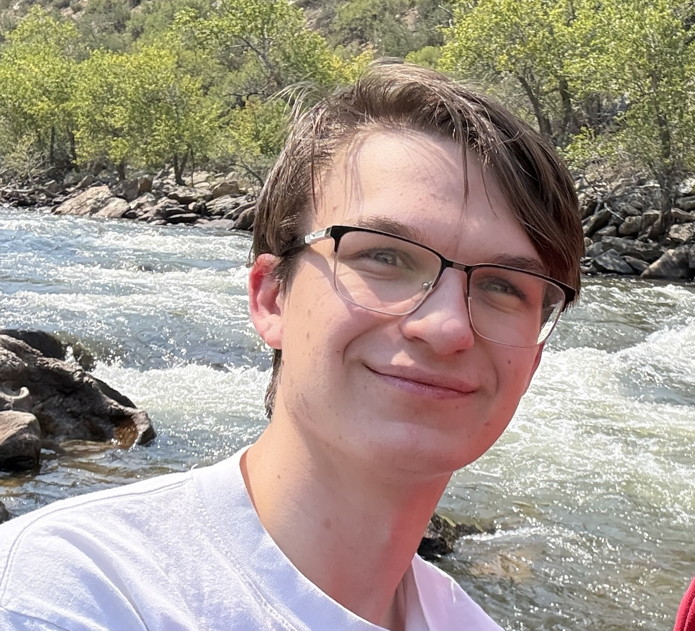

Hi! My name is Jacob Petrosky and I am a Sophmore at Lewis. My major is Computer Science and my minor is Film Studies. I was born 2006 and grew up alongside my three siblings (an older brother and two younger sisters). I went to Lincoln-Way Central for highschool and chose Lewis due to it being nearby and it's strong Computer Science department. I've had a computer and been interested in tinkering with them for as long as I could remember. My early introduction to computers is one of the main reasons I wanted to pursue a Computer Science degree. While I like using computers, I also love movies and the way they speak on our reality (which is where my film studies minor comes from). When I'm at home, I continue to live with my parents, my sibilings, and my two dogs.
The course counts towards my major and it looked pretty fun
I work as a manager at a family owned bakery currently. My responsibilites include processing and packing orders, restocking the store, and customer service
I like playing videos games and watching movies, sports, and anime
I fell off a chair and cracked my head open when I was a wee child
Last updated 08/27/2026